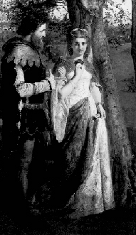

The Birth of English Law |
|
King Arthur
 King Arthur and Guinevere
|
The
Once and Future King by T. H. White can be seen as a microcosmic link in England from
barbarism to the birth of codified English law as represented by the Magna Charta in 1216.
For a background of this link, it seems appropriate first to review briefly Britain's
relationship to Rome. The Roman empire spread into Britannia beginning with the conquest of Julius Caesar in 55 and 54 B.C. The years that followed forced the civilizing of a brave yet wild country. In Britain, Rome's northern boarders were extended, lines drawn, and walls constructed to hold and identify territory. The Romans considered the Gemanic tribes, living outside these boarders, barbarians. These war-like people, clothed in heavy animal skins, were large and strong. Illiterate and crudely agrarian, these tribes were bound together by fierce loyalties to their chieftain. By 400 A.D., as Rome gradually lost control of its western empire, restless tribes, including Angles, Saxons, and Jutes, invaded and won Roman territory. In Britain these tribes were not united under one central government but formed strong, small, autonomous kingdoms. Because these illiterate people were governed by their own tribal laws, and because they held tightly to their own traditions, the refinements and benefits of Roman civilization gradually disappeared. Feuds and wars now became common and the strong won spoils from the weak. Now the jungle mandate was sure - might is right. A description of the middle ages in England, after the retreat of Rome is found in White's book. Into a mileau of feuds, wars, ravagings, and plunderings, a young tragic hero, Arthur Pendragon, was born. Knowing nothing better, Arthur easily accepted the conduct and immorality of King Uther Pendragon, his father:
Observing Sir Bruce Sans Pitie, we also find behavior reflective of the times:
While the men attended to their wars and plunder, the women needed something to do. Perhaps not typical of all women, yet still partially defining the times, was the conduct of Queen Morgause, Arthur's half sister. She didn't take black magic as seriously as her full sister, Morgan Le Fay, yet a little magic ran in her blood:
Morgause sat by the cauldron and occasionally stirred the concoction until the cat finally separated into fat, fur, meat, bones, and entrails. This queen Morgause, wife of King Lot and mother of Gawaine, Agravaine, Gaheris and Gareth, was physically an exquisite beauty. With dark, gleaming hair and a full body, she seduced her half-brother, Arthur. At the time, Arthur did not know Morgause was his sister. From this unlucky union was born Mordred, a personification of the sin which would eventually destroy Arthur and his round table. However, years before this would occur, under the wise, careful tutelage of Merlin, Arthur struggled with a new idea. Questioning if Might is Right, he finally arrived at the position of using Might for Right. He began to realize that wrongs should be redressed by reason rather than force. Arthur says:
Soon Arthur conceived the idea of the round table and instituted an order of chivalry where Might was used for Right. It worked for a while, until the knights became too boastful and their motives were only for glory and fame. Arthur then introduced the idea of the Holy Grail. This too, worked for a time, however, as a means to channel Might for Right, it reduced the ratio of good knights to bad. The good knights who reached perfection, a prerequisite condition for viewing and obtaining the Grail, were translated from the earth. The bad knights remained. Then with the troubles with Gwen and Lancelot, the order of chivalry seemed to be pulling apart. The moral sense was beginning to rot. Eventually, Arthur began to see law as a possibility for controlling evil. The law now became his chief interest and his final effort against Might. "In Uther Pendragon's time there had been no law to speak of . . ." but now for Arthur, ". . . there were three kinds of law to be wrestled with. He was trying to boil them down, from customary, cannon, and Roman law, into a single code which he hoped to call the civil one . . . (552). King Arthur is not able to finish his task because civil war breaks out, a war promoted by Mordred, the bastard son. However, the fomenting of law had begun and was eventually distilled from the traditions of feudalism. These civil traditions were finally codified in June, 1215, at Runnymede, England. The result, now famous, was the Magna Charta, the great charter. This charter later formed the precedent and justification for democratic principles which were to evolve into the next centuries. But the charter's beginnings, its supple, sinuous, extended roots, reach back to the day of Arthur's England. It was King Arthur's soil, cultivation, and nourishment which helped produce the fruit, that is, English law. © 2001 Allen Hackworth |